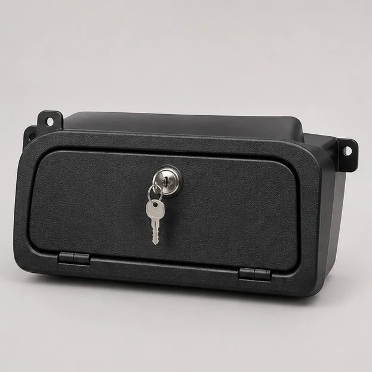

Storage & dash
Passenger Glove Box Door
Part No. 607131
$168.99 USD
Close off the open passenger-side dash cubby with a fitted, keyed door.
Vehicle fitment
E-Z-GO RXV · 2008–2023
Check fit detailsRetailer sets final price, availability and shipping.
Will it fit?
| Model | Catalog years |
|---|---|
| E-Z-GO RXV | 2008–2023 |
Fits the original passenger-side dash opening on an RXV. A custom overlay or replacement dashboard may have a different opening.
Installation notes
- Check the passenger compartment opening and its outline against the supplier listing before removing any trim.
- With the cart parked, line the door assembly up with the factory dash opening and attach it according to the RXV kit instructions.
- Open and close the fitted door. Check that the latch engages and that the key turns freely before putting valuables inside.